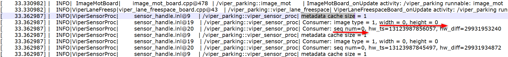
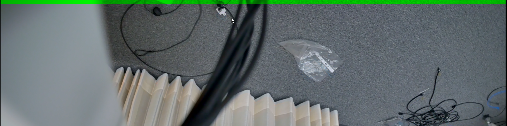

Copy of Chery camera Camera Pipeline debugging problem -2023, May 16
CNWVIII-41512 - Jira issue doesn't exist or you don't have permission to view it.
Environmental configuration
Perception warehouse: ssh://git@sourcecode01.de.bosch.com:7999/pjw3/perception.git
Based on the new architecture of Perception Viper Parking, the adaptation of the Chery camera and the Platform camera is unified into a warehouse branch, and the warehouse address is as above.Modify the compilation script per_build_release.sh to support different camera types
Chery camera: ./per_build_release.sh -O qnx -C Chery
Platform camera: ./ per_build_release.sh -O QNX
question. MI Roy (XC-CP/ESW5-CN) LI Kangmao (XC-AS/PJ-WIN-PER5) PAN Yunfeng (XC-AS/PJ-WIN-SYS1) CHEN Xiaotong (XC-AS/PJ-WIN-TPM2)
In the METADATA data of the CHERY surrounding camera, the serial number and image wide and high value are 0

2. Foreer -vision Chery wide -angle camera YUV data, with green bar at the top
